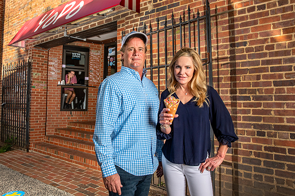

The idea for the Yogurt Pump began in the early 1980s. Frozen yogurt was a new concept. A few stores were popping up in California, but it was virtually unheard of in the state of North Carolina, and the Yogurt Pump became the state's first frozen yogurt shop in 1982! When Scott Stephenson started the Yogurt Pump – or YoPo, as it’s commonly known – in Chapel Hill in 1982, frozen yogurt was not the giant it is today. Now, Jim Kitchen '87 and Susan Kitchen '91 own Yogurt Pump. We are a local family-owned frozen yogurt shop. Frozen yogurt is an art here, While many others have come and gone, YoPo is a true Franklin Street institution, voted 'Carolina's Finest' for thirteen years running.